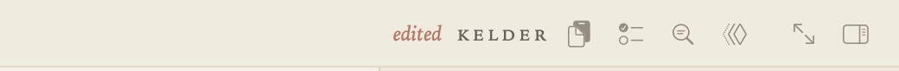
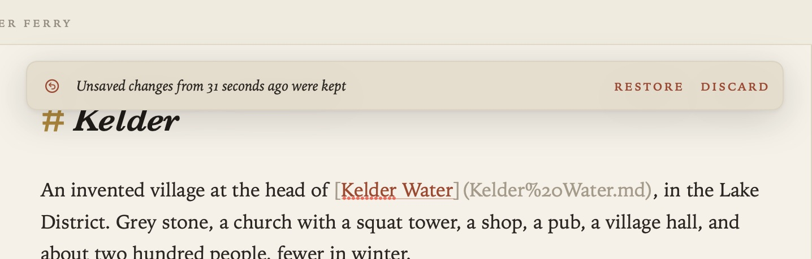
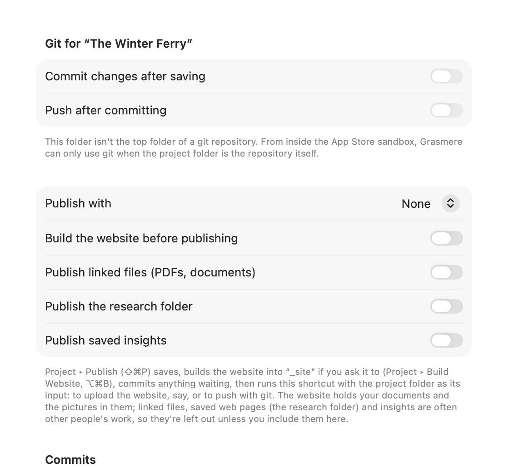

Saving, Safety and Git
Your documents are your own files, so Grasmere is careful with them. It saves as you go, never overwrites a change made somewhere else without asking, and keeps a copy of unsaved work safe through a crash.
Saving
With Settings ▸ General ▸ Save automatically on (the default), a document is saved a couple of seconds after you stop typing, and whenever you switch to another document or another app. “Saved” appears briefly in the bar beneath the page.

Turn it off and documents are saved when you switch documents, close the window or quit, and with File ▸ Save (⌘S). Until then, the running head marks the document edited.
Undo history survives saving, so ⌘Z still works after a save.
When another app changes a document
If a document is changed by another app (a sync service, another editor, git) while you have unsaved changes to it, Grasmere doesn’t save over it. The bar says the document was changed by another app, with Review. You can then:
- Keep Both: your version is saved beside the other as “Name (my version).md”.
- Use the Other Version: your changes are set aside.
- Keep Mine: your version replaces the other.
If you have no unsaved changes, the document simply shows the new version.
After a crash
While you type, Grasmere keeps a copy of your unsaved changes on your Mac, separate from your documents. If the Mac or the app stops unexpectedly, open the document again and Grasmere offers to Restore your changes or Discard them. The copy is removed once the document is saved.

If something stops a document being saved when you quit, Grasmere asks before quitting, and your changes are kept for recovery either way.
Links and undo
When Grasmere rewrites links after a document is renamed or moved, a message says how many documents changed, with Undo. Edit ▸ Link Updates lists recent updates, and each can be undone. See Links and Backlinks.
Documents you delete go to the Mac’s Trash.
Git
If your project folder is a git repository, Grasmere can work with it.

- Git History: the margin lists the commits that changed the open document, with Restore This Version. See The Margin.
- Commit automatically: Settings ▸ Automation ▸ Commit changes after saving commits every change in the project together, two minutes after you stop saving, or when you close the window or quit. The message lists the documents that changed. Nothing is ever amended or force-pushed.
- Push automatically: Push after committing pushes to your remote, using your own git setup and the SSH keys held by ssh-agent.
A few things to know:
- Committing needs git, which comes with Apple’s Command Line Tools. To install them, type
xcode-select --installin Terminal. - Grasmere can use git only when the project folder is the top folder of the repository.
- From inside the Mac App Store’s sandbox, Grasmere can’t read your
~/.gitconfig, so give the name and email to commit with in Settings ▸ Automation ▸ Commits, unless the repository sets its own. Commits aren’t signed. - If Grasmere can’t push, a Shortcut can (see below).
Shortcuts
Settings ▸ Automation ▸ Run a shortcut when runs a Shortcut of your choosing when a document is saved, created, or renamed or moved, or when the project is opened. The document, or the project folder, is passed to the Shortcut as its input. Shortcuts run outside the sandbox, so a “Run Shell Script” action can do anything you can do in Terminal.

The Shortcuts app also has Grasmere actions: Get Current Document, Get Current Project Folder, Save Current Document and Add to Today’s Entry.
Backing up
Everything that matters is in your project folder, as ordinary files. Time Machine, a sync service or git all back it up. See Support.